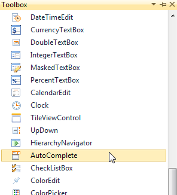
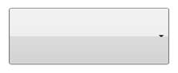
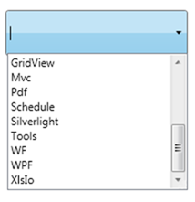

Following are the steps to create the AutoComplete by using VisualStudio in XAML as follows.
1. Create a new WPF application in Visual Studio.In Visual Studio Toolbox, click Syncfusion WPF Toolbox tab and select AutoComplete.

Figure 13: Select AutoComplete From ToolBox
2. Drag-and-drop the AutoComplete to Design View, to add AutoComplete to the application.

Figure 14: AutoComplete Drag and Drop from ToolBox
3. You can now customize the properties of AutoComplete in the Properties Window.
|
[XAML] <local:ProductSource x:Key="Src"/> <syncfusion:AutoComplete x:Name="AutoComplete1" Source="Custom” CustomSource="{StaticResource Src}"/> |

Figure 15: AutoComplete Created Using XAML